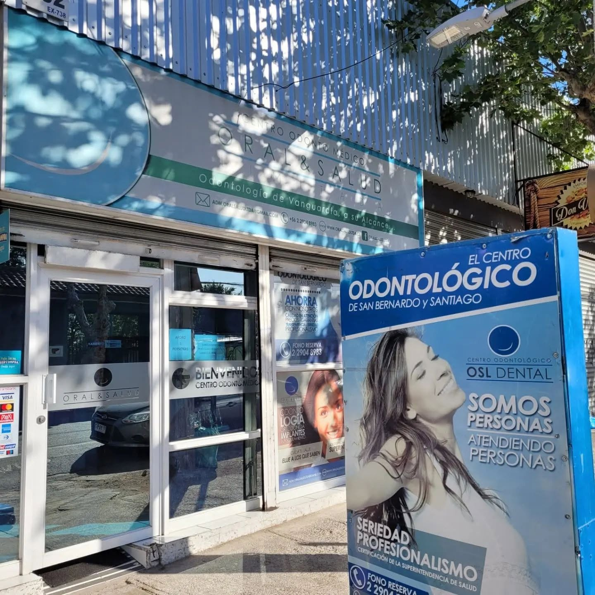
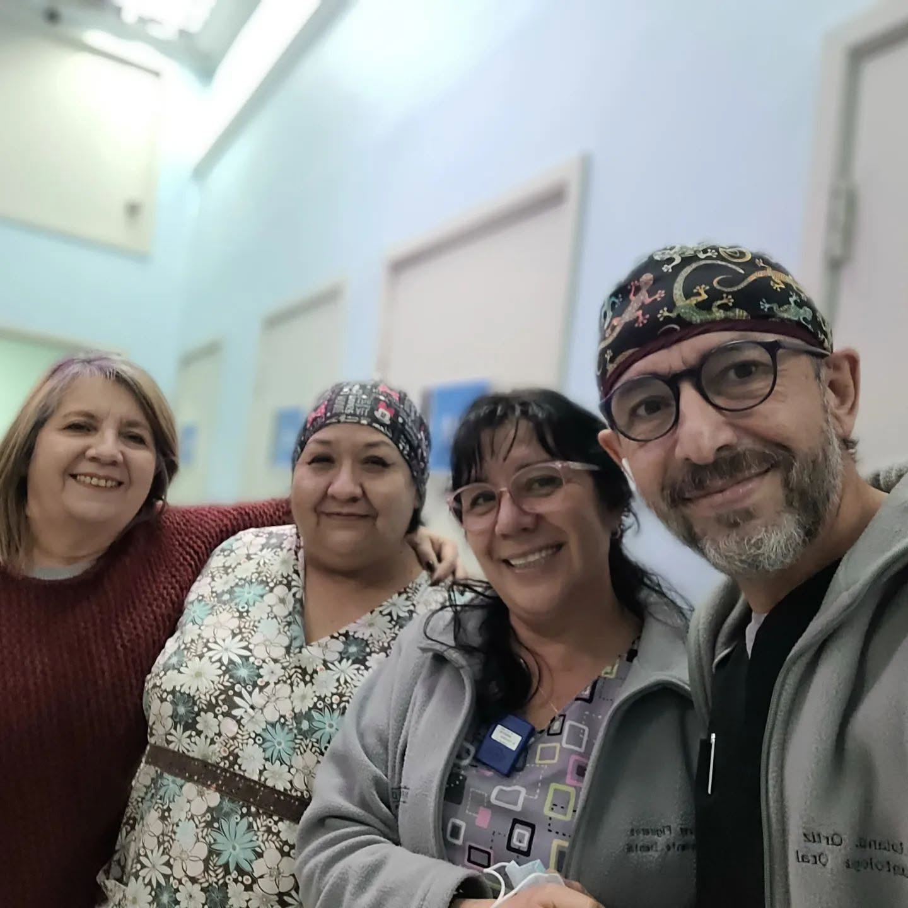
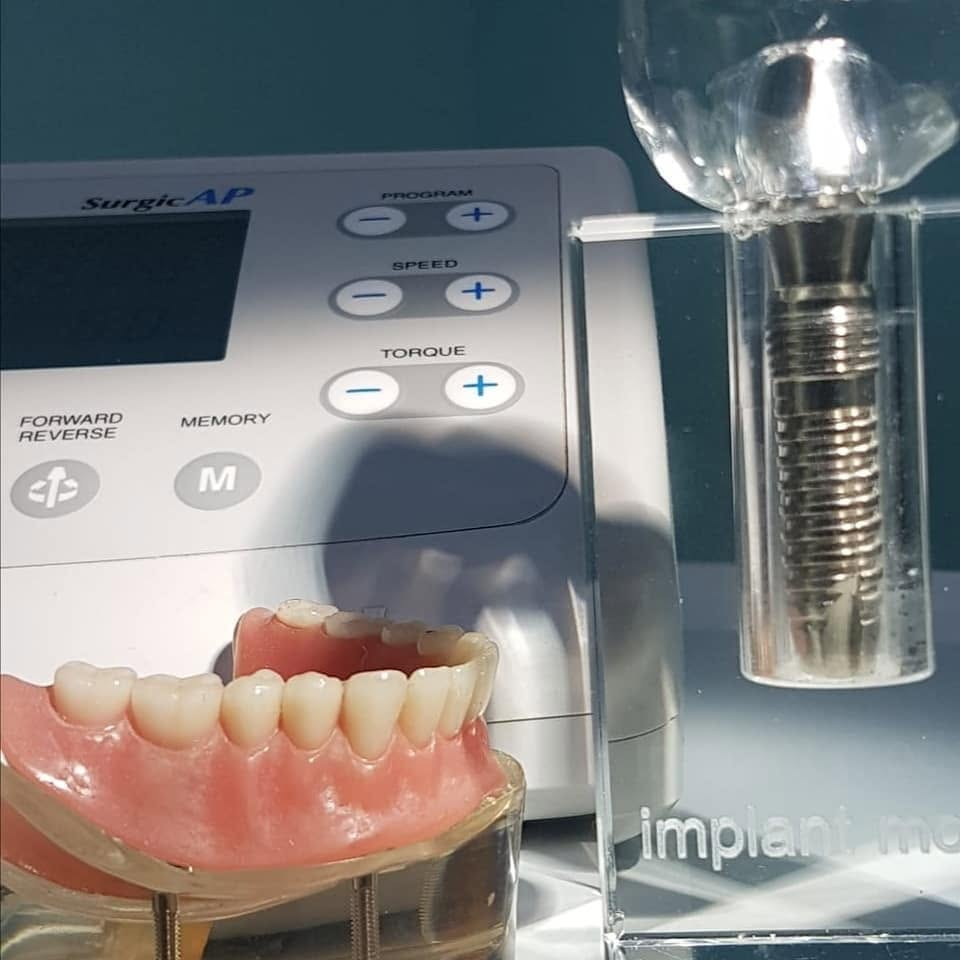
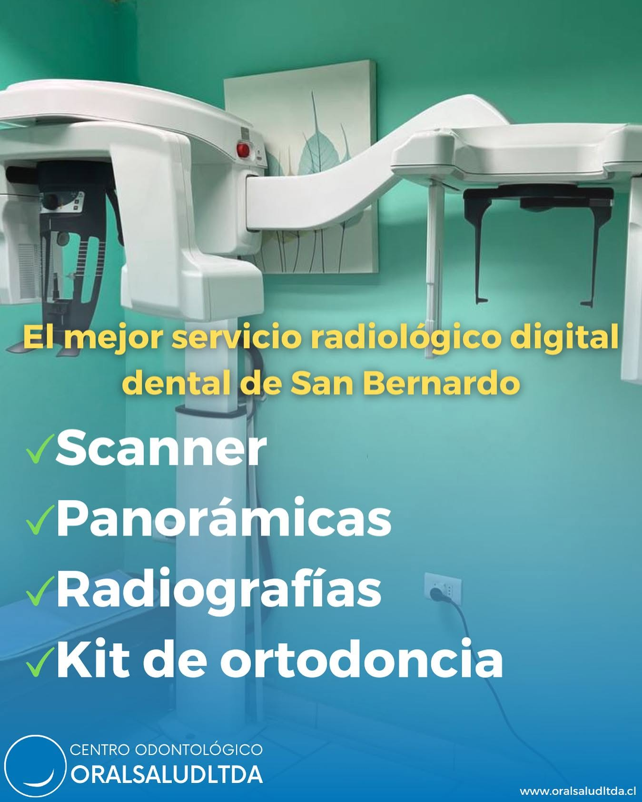

Implantología
Recupera función, seguridad y estética.
ODONTOLOGÍA EN LA ERA DIGITAL
Atención odontológica integral y radiología dental digital en un mismo lugar, con un equipo profesional enfocado en las personas.

NUESTRA MISIÓN
En Oral Salud buscamos entregar una experiencia odontológica cercana, profesional y apoyada en tecnología moderna.
Integramos atención clínica, especialidades odontológicas y servicios de radiología digital para facilitar el diagnóstico y tratamiento de nuestros pacientes.

ATENCIÓN INTEGRAL
Recupera función, seguridad y estética.
Una sonrisa saludable y armónica.
Atención especialmente pensada para niños.
Tratamientos para conservar tus piezas dentales.
Cuidado de encías y tejidos de soporte.
Mejora la apariencia y armonía de tu sonrisa.

IMPLANTOLOGÍA
Los implantes dentales pueden ser una alternativa para recuperar dientes ausentes y mejorar la función y estética de tu sonrisa.

Imágenes digitales para evaluación y planificación clínica.
Radiografías con Visión general de las estructuras dentales.
Estudios radiológicos para tratamientos de ortodoncia.
¿POR QUÉ ORAL SALUD?
Un equipo orientado a entregar atención odontológica integral.
Herramientas digitales para diagnóstico, planificación y radiología.
Buscamos que cada paciente entienda su tratamiento y se sienta acompañado.
DA EL PRIMER PASO
Agenda una evaluación o escríbenos directamente por WhatsApp.
CONTACTO
Dirección
Eyzaguirre 732,
San Bernardo,
Región Metropolitana
Teléfono
2 2904 8983
WhatsApp
+56 9 7860 4187